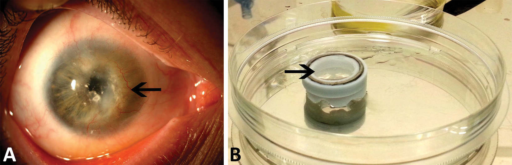

The amniotic membrane as a biological scaffold, its preparation and use in regenerative medicine in Slovenia
Abstract
Amniotic membrane (AM) is the innermost layer of the placenta, surrounding and protecting the embryo. AM is a multilayered tissue composed of amniotic epithelial cells, amniotic mesenchymal stromal cells, basal lamina, and stroma. AM’s properties, which are the result of its structural features, render it extremely useful for therapeutic purposes, since it enhances epithelisation, is a substrate for cell growth, decreases fibrosis and tissue neovascularisation and has antimicrobial properties. Due to its mechanical properties, which are mostly a result of the basal lamina’s and stroma’s extracellular matrix, and different growth factors that it contains, AM is increasingly used as a biological scaffold in regenerative medicine.
Regenerative medicine is an interdisciplinary field of research and clinical applications, utilising principles of biological and engineering sciences for the development of viable tissue or organ substitutes. In regenerative medicine, we distinguish between three approaches: 1) engraftment of functional cells (including stem cells) into the damaged or defective tissue; 2) reshaping of the damaged or defective tissue using synthetic or natural materials; and 3) tissue engineering, i.e. the use of scaffolds for the enhancement of the growth of tissue-specific cells and development of new, regenerated tissue. Furthermore, we present the use of AM as a biological scaffold in regenerative medicine in Slovenia.
1 The structure and properties of the amniotic membrane
The placenta is composed of the maternal and foetal parts. The latter consists of chorion (outer layer) and amniotic membrane (innermost layer) (1). Amniotic membrane (AM) is a non-innervated and non-vascularised 0.02–0.5 mm thick structure that surrounds and protects an embryo or foetus during pregnancy, and maintains homeostasis of the amniotic fluid (2) (Figure 1A). It is formed by a monolayer of amniotic epithelial cells (AEC), basal lamina and a three-layered connective tissue (stroma). Stroma is composed of a compact layer, a layer of amniotic mesenchymal stromal cells (AMSC) and a spongy layer. The spongy layer of AM borders to the chorion. The basal lamina forms the boundary between the epithelium and stroma (Figure 1B) (3).
Cell junctional proteins between AEC (occludin, claudin-3 and claudin-4, desmoplakin) together with the elements of the extracellular matrix of the basal lamina and AM stroma (collagen type I, III, IV, V, VI, laminin, fibronectin, hyaluronan and other proteoglycans) contribute significantly to the integrity and biochemical properties of AM.
Proteins, located in different layers of the stroma (collagen type I, III, IV, V, VI, VII, laminin and fibronectin) function as a
AM contains different growth factors, among them epidermal growth factor (EGF), transforming growth factor alpha (TGF-α), keratinocyte growth factor (KGF), hepatocyte growth factor (HGF), basic fibroblast growth factor (bFGF) and transforming growth factor β1 and β2 (TGF-β1 and -β2) (19-22). Growth factors in AM are found
AEC also express anti-inflammatory proteins such as receptor antagonist interleukin-1 (IL-1RA) and IL-10 (26,27). Different cell types (e.g. corneal and limbal stem cells, corneal keratocytes, and conjunctival epithelial cells), treated with an AM extract or cultured on AM, expressed lower amounts of pro-inflammatory interleukins-1α and -1β, interleukin-2, interferon-γ (IFN-γ), tumour necrosis factor–α (TNF-α) and interleukin-6 (28-32). Due to its anti-inflammatory action, AM reduces fibrosis and tissue neovascularisation (2,31).
AM also displays antimicrobial activity
Like on other embryonic tissues and cells, human leukocyte antigens -A, -B, -C and -DR (HLA) are very weakly expressed on the AEC. Therefore AM transplantation does not cause acute immune response (37).There was no rejection of human AM in xenotransplantation (38).The expression of HLA-G, which plays an important role in triggering immune tolerance, was also demonstrated on the AEC.
2 Amniotic membrane as a scaffold in tissue engineering
The task of tissue engineering is to develop tissue substitutes that restore, maintain or improve tissue function (40). Tissue regeneration or replacement of poorly functioning or dysfunctional organs can be achieved by a combination of suitable scaffolds (synthetic or biological), cells and bioactive molecules (41-44).
An important step in tissue engineering is the choice of an appropriate scaffold material. Scaffolds should provide a suitable environment for cell growth and differentiation and enable the formation of a functional tissue substitute after
The major disadvantages for the wider use of AM in clinical practice are 1.) non-standardised procedures for AM preparation and storage, 2.) biological variability of AM, and 3.) low mechanical strength of AM (49). Other materials, such as collagen, fibrin, siloxane-hydrogel, polycaprolactone, gelatine-chitosan, etc., are often used as scaffolds for eye surface reconstruction (48).
Possible modes of using AM as a scaffold are shown in Table 1 and Figure 2. For instance, AM as a scaffold for the epithelial cells, obtained either from limbus biopsies or from the biopsies of the oral mucosa, is most often used for the reconstruction of the ocular surface (48).
|
AM as a scaffold for: |
Reference |
Notes |
|
Corneal/limbal epithelium with limbal epithelial stem cells |
Koizumi et al., 2000 (19,23), Grueterich et al., 2003 (119), Shortt et al., 2007 (120), Tsai et al., 2000 (121), Sharma et al., 2011 (122), Mariappan et al., 2010 (123), Ang et al., 2010 (124), Pathak et al., 2016 (125), Zakaria et al., 2014 (126), Vazirani et al.,(127) |
For transplantation of cultured corneal/epithelial epithelium For transplantation research |
|
Chondrocytes |
Krishnamurithy et al., 2011 (128), Diaz-Prado et al., 2010 (129), Jin et al., 2007 (130) |
Research for chondrocyte transplantation in repair of joint cartilage |
|
Fibroblasts |
Mahmoudi-Rad et al., 2013 (131) |
Research for the preparation of temporary skin substitutes |
|
Epidermal keratinocytes |
Huang et al., 2013 (132) |
Research for the preparation of dermal scaffolds for skin structure reconstruction |
|
Autologous melanocytes |
Redondo et al., 2011 (133) |
Growth of melanocytes on denuded AM for vitiligo treatment |
|
Urothelial cells |
Jerman et al., 2014 (64), Sharifiaghdas et al., 2007 (64,134) |
Research for the preparation of the urothelium for transplantations |
|
Human alogenous primary fibroblasts and keratocytes |
Wilshaw et al., 2008 (135) |
Research for the preparation of a construct for the treatment of diabetic leg ulcers, corneal defects and burns |
|
Mesenchymal corneal stem cells, explant cultivation technique |
Lužnik et al., 2016 (87) |
As a research model and a potential therapeutic product |
|
Mesenchymal stem cells obtained from adipose tissue (hADM-SC) |
Gholipoumalekabadi et al., 2016 (136) |
Research: preparation of hADM-SC to promote tissue regeneration and treat skin damage |
|
Mesenchymal stem cells obtained from bone marrow |
Chehelcheraghi et al., 2016 (137), Tan et al., 2011 (138) |
Research: AM scaffold for mesenchymal stem cell differentiation |
|
Oral mucosa epithelium |
Dobrowolski et al., 2015 (139), Amemiya et al., 2015 (140) |
Reconstruction of the oral mucosa surface and the ocular surface |
|
Lacrimal gland acinar cells |
Tiwari et al., 2012 (141), Schrader et al., 2007 (142) |
As a research model and a potential therapeutic product |
|
Cell differentiation from AM and Wharton’s jelly |
Sanluis Verdes et al., 2017 (143) |
Research: AM as a scaffold for cells that differentiate into cells resembling nerve cells |
|
Bevacizumab medicine |
Mayer et al., 2013 (144) |
As a scaffold for medicinal treatment of corneal ulcers |
3 Preparation of AM for scaffold use
Due to the possibility of bacterial infection with vaginal microbiota, AM is always harvested during an elective caesarean section (50-52). The donor (women giving birth) must be informed about the intended AM use for research or clinical purposes and must give her consent for AM to be harvested.
The optimal AM storage method shall meet the following conditions: a) it allows AM to maintain the properties relevant for its use as a scaffold; b) it preserves functionality and sterility of AM; c) it is simple to use (53). The legislation requires that prior to its use for clinical purposes AM is tested for any potential infection with various viruses or bacteria. Since in some cases AM should be quarantined for another 6 months, fresh AM is rarely used (54). The most common AM storage methods are: a) storage of fresh AM at -80 °C (in a phosphate buffer solution - DMSO (dimethyl sulfoxide) or a Modified Eagle Medium (MEM) – glycerol solution) or b) freeze drying (13,54). Other methodes like air drying, treatment of AM with glutaraldehyde and polytetrafluoroethylene or lyophilisation are less frequently used (2,13,50).
Various studies have shown that different AM processing, storing and sterilization methods can affect AM properties, whereas Adds et al. could not detect any differences in the clinical effectiveness of AM when used either fresh or frozen (stored in 50 % glycerol for half a year at -80 °C) (51). AM freezing in 50 % glycerol does not allow survival of AM cells but preserves its basic morphology. One of the bigger obstacles in using AM as a scaffold for the cultivation of different cells is in the lack of studies that would determine the optimum AM storage method. Different studies demonstrated the influence of AM processing and storage methods on the AM properties that were relevant for cell culturing, such as AM mechanical properties, the ability of cell adhesion and proliferation to the AM, reduced content or release of growth factors, and altered properties of the basal lamina. Nevertheless different processing and storage methods (freezing in glycerol, Hank’s balanced salt solution, lyophilisation) were suitable for cell growth (53,60-62).
If AM is used as a scaffold, it can be used with (intact AM) or without AEC (denuded AM) (3,28,63). AEC can be removed in one of several ways: a) by treatment with EDTA or with dispase; b) with thermolysin (3,28,64); or c) by treatment with SDS detergent (sodium dodecyl sulphate) (3).
AM for scaffold use can also be modified using other methods: TG-2 transglutaminase increases the mechanical strength of the AM and its resistance to proteolytic / collagenase degradation, but does not affect the adhesion, growth, proliferation and differentiation of cells (65). The mechanical strength of AM and thereby its suitability for use in reconstructive urology can be increased with polymeric nanofibres made by electrostatic spinning process (66). AM modified with carbodiimide or a combination of carbodiimide and L-lysine was shown to be a very suitable scaffold for the cultivation of limbal stem cells (67,68).
4 AM as a source of stem cells
AM hosts two cell populations that are believed to have stem-cell properties, i.e. AEC and AMSC. The advantage of stem cells from adult tissues and stem cells from AM is that they - unlike embryonic stem cells - do not form teratomas (69-71).
AEC and AMSC are capable of differentiation to cells of all three embryonic germ layers in
Owing to their anti-inflammatory activity (inhibition of the activated T lymphocyte proliferation and inflammatory cytokines Th1 secretion, regulatory T-cells induction, etc.) (20,75), ability to promote epithelization (by AEC’s excretion of bFGF, HGF, EGF, KGF factors) (26,76) and their anti-angiogenic activity (by AEC’s and AMSC’s excretion of endostatin, thrombospondin-1 and the tissue inhibitors of metalloproteinases-1 and -2) (26,77,78), AM cells are suitable for therapeutic purposes. In recent years, several studies have been performed on various animal models to study the effect of AM cells in Parkinson’s and Alzheimer’s disease, multiple sclerosis, spinal cord injuries, cerebral and cardiac arrest, pulmonary disease, hepatic fibrosis, muscular dystrophy, diabetes, and bone and cartilage injuries. Furthermore, clinical studies are being conducted to investigate the use of AM cells for the treatment of burns, Crohn’s disease, diabetic foot, haematopoietic diseases, metabolic disorders, diabetes and rheumatoid arthritis (79). Further clinical studies will have to comprehensively evaluate the effect of AM-derived stem cells on the course of disease and treatment in humans.
5 AM as a scaffold for cultivating corneal (limbal) epithelial stem cells
Corneal stem cells enable renewal of corneal epithelium. They are thought to reside in the basal layer of the limbal epithelium and are therefore also called limbal epithelial stem cells (LESC). When these LESC become damaged (dysfunctional) or deficient, the corneal epithelium loses its regenerative ability and is gradually replaced by conjunctival epithelium. Limbal epithelial stem cell deficiency leads to recurrent or persistent epithelial defects, corneal neovascularisation, chronic ocular surface inflammation, and scarring that, in turn, lead to painful loss of vision (Figure 3A). The etiology of limbal epithelial stem cell deficiency is most commonly acquired (chemical or thermal injuries, Stevens-Johnson syndrome, ocular cicatricial pemphigoid, prolonged soft contact lens wear), and rarely congenital, like in aniridia (80).

Limbal stem cell deficiency (LSCD) can either be partial or total and may affect one (uni-) or both eyes (bilateral). Treatment of LSCD is complex and often lifelong (81). Total LSCD requires transplantation of healthy LESCs (82,83), which can be of autologous or allogeneic origin (from a cadaver or a living-related donor). Currently, there are two major surgical approaches used for LESC transplantation: 1) the conventional surgical procedure, where healthy donor limbal tissue is transplanted directly, or 2) the indirect cultivated limbal epithelial transplantation (CLET), where from a small (1–2 mm2) limbal biopsy corneal epithelium containing LESCs is cultured
Clinically, two main culture protocols proved to be most useful: 1) the suspension method – where suspended LESCs are co-cultured with a mouse fibroblast feeder layer (fibroblasts isolated from embryonic mice – 3T3 J2), and 2) the explant method – where a small limbal tissue biopsy is directly cultured on a human AM. As the basal lamina of AM is similar to the basal lamina of corneal and conjunctival epithelium, it is particularly suitable as a biological scaffold for
Although different protocols for
Different centres worldwide favour the use of denuded or intact AM (85,86,90). Koizumi et al. compared the use of denuded and intact AM for LESC cultivation (90). With intact AM usage, the phenotype of the growing epithelium was more similar to the limbal epithelium (presumably containing more stem cells), while the epithelium grown on denuded AM was more similar to a mature corneal epithelium (2,90). The stromal side of AM could also be used for limbal epithelium cultivation, as it contains particularly high concentrations of nerve growth factor (NGF), which plays an essential role in epithelium development and survival of stem cells (85). Solomon et al. have reported that the stromal side of AM in the cultivated limbal epithelium inhibits lipopolysacharide-induced increased expression of IL-1α and β (29).
Since 2000, AM has been successfully used in clinical practice in Slovenia (91): to promote healing of corneal ulcers, for management of corneal perforations, for eye surface reconstruction surgeries, and for acute treatment of thermal and chemical injuries (25). At the Eye Hospital, University Medical Centre, Ljubljana, after having obtained the consent of the Medical Ethics Commission of the University Medical Centre Ljubljana, we started with the explant technique of cadaveric limbal tissue cultivation on AM for research purposes. The first results of
In order to transplant an adequate number of cultured LESCs into the diseased patient’s eye,
Using immunohistochemical methods we could observe cultured epithelial growth on both sides of AM. The epithelium was stratified, non-keratinising, and the cells in the basal epithelial layer expressed the transcriptional factor p63, which is one of the leading putative LESC markers. Individual cells were positive for Ki67, a proliferation marker, which indicates the proliferation potential of cultured limbal epithelium. Limbal epithelial growth on the epithelial side of AM has already been well described in literature, however, there are still contradictory opinions in regard to the ability of the limbal epithelium to grow on the stromal side of AM. Zakaria et al. reported that they did not observe limbal epithelial growth on the stromal side of AM, but they used a different culture medium than our group (86).
The content of limbal mesenchymal stromal stem cell (MSC) in limbal cultures, grown on AM, has not yet been reported in the literature. Our experiments confirm that AM enables more selective growth of epithelial cells, as the proportion of cells positive for mesenchymal stem cell markers (CD73/CD90/CD105+ and CD45-) was statistically significantly lower compared to control cultures. Szabo et al. reported 22 % of cells in limbal cultures to be positive for CD184 and only 0.6 % positive for CD117 (94), both representing putative surface markers for LESC. In our study, we identified 2–7 % of cells that expressed CD184 and CD117. Clinical studies revealed that a favourable clinical outcome of CLET was achieved if the content of LESCs in the transplanted epithelium was at least 3 % (92). Based on our current experimental results, this threshold can be reached with the limbal explant technique. With an interdisciplinary approach we would like to introduce this new treatment method for managing severe total limbal stem cell deficiency with cultivated LESC transplantation to Slovenia in the near future.
6 AM as a scaffold for urothelial cells
The urinary bladder wall consists of four layers: the urothelium, submucosa, muscular layer and the adventitia (95). The urothelium is composed of three to seven layers of cells, divided according to their position into superficial, intermediate, and basal cells. The superficial urothelial (umbrella) cells are highly specialised and achieve a high level of differentiation, which significantly contributes to the maintenance of the blood-urine barrier (95-97). The basal lamina separates the urothelium from the underlying submucosa, which consists of the lamina propria and connective tissue (98,99).
Various pathological conditions, such as congenital anomalies, trauma, inflammations or malignancies, require reconstruction of the urinary bladder (100,101). In 2013, there were 344 new cases of bladder cancer detected in Slovenia. Non-invasive cancer of the urinary bladder (non-invasive papillary urothelial carcinoma) is treated by transurethral resection (partial or complete removal of the tumour through the urethra), whereas invasive bladder cancer or large, recurrent, non-invasive tumours or tumours that are unresponsive to the treatment require cystectomy (removal of a part of the urinary bladder or of the whole organ) (102). In order to prolong the survival of patients with bladder cancer, new therapies are being developed. One of these is a tissue-engineering approach. In 2006, Atala et al. (98) described the preparation of a bladder construct that was used for a urinary bladder reconstruction in seven patients with myelomeningocele. First, the patients underwent bladder biopsies; urothelial and muscle cells were cultured
Various biological materials have been used for urinary bladder reconstruction, albeit with a limited success. In 2014, Jerman and coworkers from the Institute of Cell Biology at the Faculty of Medicine, University of Ljubljana used AM as a scaffold for the growth of normal urothelial cells (64). Normal porcine urothelial (NPU) cells were seeded on a) AM epithelium (eAM), b) AM basal lamina, i.e. denuded AM (dAM), or c) connective tissue (stroma) of AM (sAM). The proliferation and differentiation of NPU cells were followed for 3 weeks. By using electron microscopy, histochemical and immunofluorescence techniques, we provided evidence that all three AM scaffolds enable the development of the urothelium. The fastest growth and the highest differentiation of NPU cells were demonstrated on the sAM scaffold, which enables the development of tissue-engineered urothelium with molecular and ultrastructural properties comparable to that of the native urothelium with functional blood-urine barrier. Superficial urothelial cells expressed uroplakins, which organized into urothelial plaques, and were well connected with tight junctions. On the sAM scaffold, NPU cells formed a new basal lamina composed of type IV collagen. It is believed that the paracrine role of AM as well as the topography and composition of the extracellular matrix of AM are important for the formation of such urothelium (64).
Notebly, the highly differentiated urothelia on the sAM scaffolds provide important experimental models for drug delivery studies and developing tissue engineering strategies considering that subtle differences are identified before translation to the clinical settings.
7 Amniotic and amnio-chorionic membranes for the treatment of chronic wounds
Wound healing is a complex process consisting of inflammatory, proliferative- and remodelling phase (Figure 4A) (104). The process involves a synchronised function of several cell types. The most dynamic wound healing processes occurs in the first days after injury, when immune cells and platelets migrate to the site of injury, triggering coagulation and inflammation. Immediately after the formation of the wound, the platelet count at the site of the injury increases while the number of neutrophils rises within 24 hours after the injury. In the following days, the number of macrophages, fibroblasts and lymphocytes increases as well (Figure 4B (104). If the inflammatory process is not completed within a week, the wound is regarded as chronic. The chronic wound fails to heal even after two months (105). Despite extensive research, molecular mechanisms that contribute to the onset of chronic wounds have still not been fully explained (106). The wound healing process in embryo differs greatly from the wound healing in an adult: inflammation after an injury to embryo is lesser, resulting in a smaller scar and better tissue healing.
To support the wound healing process, AM or amnio-chorionic membrane (ACM) is used. ACM is thicker, stronger, and contains higher amounts of growth factors, which is of particular importance for the topical use.
AM or ACM for therapeutic purposes is used as fresh or frozen. Fresh AM is used mainly in underdeveloped countries, where the procurement and use of expensive and huge freezers for tissue storage at -80 °C represents a major obstacle (107,108). In the treatment of chronic wounds, the use of commercially available dehydrated AM (Purion®, MiMedx, USA) or ACM (Epifix®, MiMedx, USA) produces an effect comparable to that achieved by the use of fresh or frozen AM or ACM.
AM and ACM are used mainly for the treatment of diabetic foot, venous or arterial ulcers and other chronic wounds (109,110). In randomised controlled clinical trial on diabetic foot healing, the use of AM and ACM improved the process of wound healing: in most cases the process was successfully completed (92 % in 6 weeks) (106). A high rate of success was also shown by some other studies (111-113).
At the Clinical Department of Surgical Infections of the Ljubljana University Medical Centre, four patients with chronic wounds were treated with ACM. Two of the patients had diabetes and chronic wounds on the ankle and the foot, respectively. The third patient had a chronic wound of unknown aetiology above the sternum, and the fourth patient was a child with chronic burn wound on the front side of his chest. The surgical treatment and the treatment according to the latest guidelines for wound care was unsuccessful, therefore all four patients received dehydrated ACM (Epifix®) once a week for three consecutive weeks. A great improvement was observed after 14 days, i.e. after the second cycle of ACM, when the wound surface decreased for more than 30 %. After three applications of ACM the wounds healed completely, and there were no recurrences (114,115).
8 Conclusion
With the development of regenerative medicine mechanical properties of AM (stability, elasticity and plasticity) came to the fore. These properties are attributable mainly to the molecules of the extracellular matrix that forms the basal lamina and extracellular matrix of the stroma and make AM a good scaffold for use in tissue engineering and regenerative medicine. In orthopaedics, micronized dehydrated human AM is used to reduce or prevent soft tissue inflammation (e.g. fasciitis) or osteoarthroses (116). In Slovenia, AM is used in ophthalmology since 2009 either as a graft, patch or a filler for the treatment of various eye injuries. Since glycerol-frozen AM can be successfully used as a scaffold for LEMC cultivation, the Department of Ophthalmology, in the cooperation with the Centre for Blood Transfusion Medicine of the Republic of Slovenia, has started to develop a procedure that will allow for the preparation of clinically appropriate, on AM cultivated LEMC for the treatment of a range of LEMC-deficiency associated disorders at different stages of progression (118). Since AM scaffolds enables the development of highly differentiated urothelia, the Institute of Cell Biology at Faculty of Medicine continues with development of tissue engineered constructs of AM and urothelium for drug delivery studies and for developing new tissue engineering strategies considering that subtle differences are identified before translation to the clinical settings.
9 Acknowledgement
The authors sincerely thank the Department of Gynaecology of the University Medical Centre in Ljubljana, and all the women who donated their amniotic membrane for research or clinical use. Sincere thanks also to Ms. Cvetana Tavzes for proofreading. The work was supported by the Slovenian Research Agency (Grant No. P3–0108, P3–0371, J3–7494 and the Young Researcher Program).